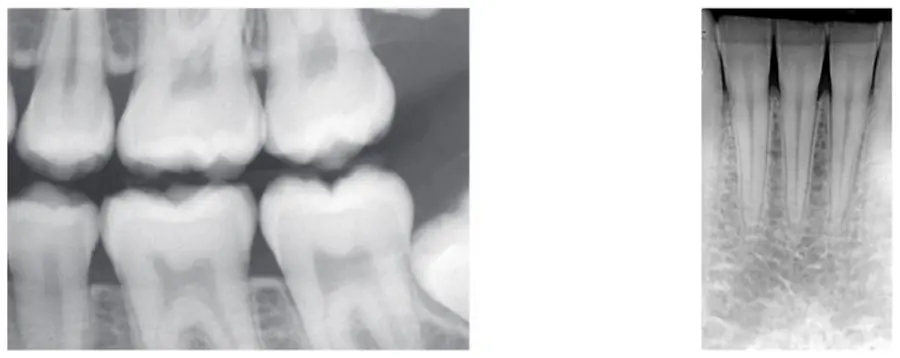
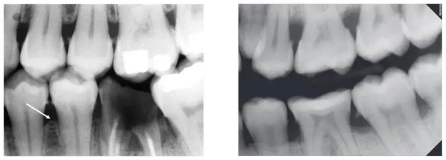

نسخه استخراجشده؛ ترجمه یا تأیید علمی انجام نشده است. وضعیت: captured
پیش از هر تشخیص پریودنتال، باید بدانی نرمال چه شکلی است — و مهمتر، کدام «غیرعادی»ها هنوز نرمالاند.

کرست نرمال: «یک لایهی نازک استخوان کورتیکال رادیواوپک اغلب روی کرست زائدهی آلوئولار قرار دارد، در سطحی تقریباً ۰٫۵ تا ۲٫۰ میلیمتر آپیکالتر از سطح CEJ.»
و شکلش تابع ناحیه است: «میان دندانهای خلفی، کرست آلوئولار موازی با یک خط فرضی که CEJهای دندانهای مجاور را وصل میکند جهتگیری کرده؛ در حالی که میان دندانهای قدامی، کرست بیشتر قلهمانند (peaklike) دیده میشود.»
و یک نکتهی منطقی که باید دقیق بفهمی: «دیدن این کرست آلوئولار کورتیکهشده، نبود پریودنتیت را نشان میدهد. ولی عکسش همیشه درست نیست؛ نبود یک کرست آلوئولار کورتیکهشده هم در بیماران با پریودنتیت و هم بدون آن دیده میشود.» یعنی این نشانه هم تکجهته است — درست مثل لامینا دورا در یونیت ۱.
ناحیهی دوم که باید ارزیابی شود: جایی که کرست آلوئولار با لامینا دورای دندان مجاور ادغام میشود. «برای دندانهای خلفی، این گذار با یک زاویهی تیز و واضح تعریف میشود که به سطح ریشه نزدیک است.»
سه واریاسیون نرمال که با بیماری اشتباه میشوند:
و در بیشتر موارد، فضای PDL کرونال «معمولاً نازک و با پهنای یکنواخت» دیده میشود.
نخستین جملهای که باید بدانی: «چون ژنژیویت یک وضعیت التهابی محدود به بافت نرم لثه است، هیچ تغییر رادیوگرافیک همراهی در استخوان زیرین دیده نمیشود.» پس کلیشهی نرمال، ژنژیویت را رد نمیکند.

و تغییرات زودرس پریودنتیت؟ «بهصورت نواحی اروژن موضعی کرست آلوئولار بیندندانی ظاهر میشوند.»
و تفاوت ناحیهای:
و هشداری که تفسیر تو را عوض میکند: «حتی اگر تنها تغییرات خفیفی آشکار باشد، آغاز فرایند بیماری ممکن است اخیر نباشد، چون شواهد رادیوگرافیک تحلیل استخوان معمولاً پس از آغاز بیماری میآید.» یعنی وقتی تغییر میبینی، بیماری از قبل شروع شده بوده.
و سازوکار بیماری در یک نگاه: بیوفیلم پلاک نقش اولیه را در آغاز بیماری دارد. باکتریهای درگیر «عمدتاً باسیلهای گرممنفی و اسپیروکتها» هستند که سطح دندان و ریشه را کلونیزه میکنند.
«هرچند این باکتریها میتوانند مستقیماً با آزاد کردن سموم به بافت میزبان آسیب بزنند، مهمتر آنکه ممکن است یک واکنش التهابی میزبان را تحریک کنند.» و «آزاد شدن میانجیهای التهابی مسئول بخش زیادی از آسیب به بافتهای نرم پیرامون است و تحلیل استخوانی استئوکلاستیک را تحریک میکند».
و اینکه چرا پاکت عمیقتر میشود: «پاسخ التهابی سبب از دست رفتن و مهاجرت آپیکالِ اپیتلیوم جانکشنال میشود، که به تشکیل پاکت پریودنتال میانجامد و آن هم کلونیزاسیون باکتریایی را بیشتر تسهیل میکند.» یک چرخهی خودتقویتکننده.
و الگوی زمانی بیماری: «بیماری پریودنتال اغلب در انفجارهایی با شدتهای متفاوت پیش میرود. مانند همهی فرایندهای التهابی، دورههای چرخهای التهاب فعال و تخریب بافت وجود دارد که با دورههای سکون بدون تغییر محسوس دنبال میشود.» و بیماری «معمولاً بدون درد است و بیشتر بیماران تا زمان تحرک و در نهایت از دست دادن دندان از وجودش بیخبرند».